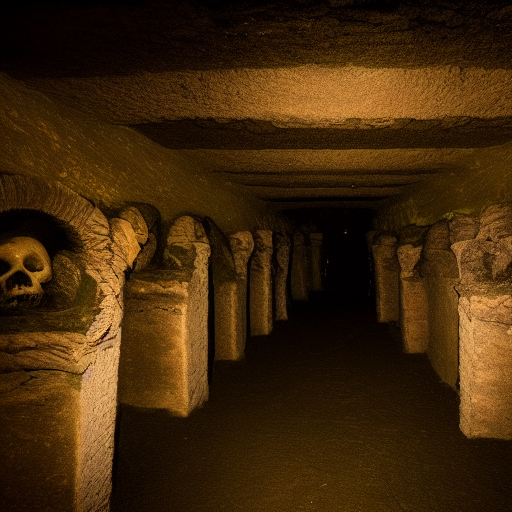

You enter a spooky catacomb
The dim light from your weapon casts long, flickering shadows as you tread the ancient stone pathways. Soon, a soft murmuring leads you to a forgotten altar. It's covered in layers of dust, but the inscriptions hint at a ritual to invoke the spirits of fallen warriors for guidance.

Place weapon upon altar
Continue Exploring